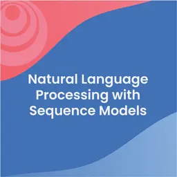

#!pip install trax==1.3.1 Use this version for this notebook 
In this notebook you’ll get to know about the Trax framework and learn about some of its basic building blocks.
Background
Why Trax and not TensorFlow or PyTorch?
TensorFlow and PyTorch are both extensive frameworks that can do almost anything in deep learning. They offer a lot of flexibility, but that often means verbosity of syntax and extra time to code.
Trax is much more concise. It runs on a TensorFlow backend but allows you to train models with 1 line commands. Trax also runs end to end, allowing you to get data, model and train all with a single terse statements. This means you can focus on learning, instead of spending hours on the idiosyncrasies of big framework implementation.
Why not Keras then?
Keras is now part of Tensorflow itself from 2.0 onwards. Also, Trax is good for implementing new state of the art algorithms like Transformers, Reformers, BERT because it is actively maintained by Google Brain Team for advanced deep learning tasks. It runs smoothly on CPUs, GPUs and TPUs as well with comparatively lesser modifications in code.
How to Code in Trax
Building models in Traxrelies on 2 key concepts:
- layers and
- combinators.
Trax layers are simple objects that process data and perform computations. They can be chained together into composite layers using Trax combinators, allowing you to build layers and models of any complexity.
Trax, JAX, TensorFlow and Tensor2Tensor
You already know that Trax uses Tensorflow as a backend, but it also uses the JAX library to speed up computation too. You can view JAX as an enhanced and optimized version of numpy.
Watch out for assignments which import import trax.fastmath.numpy as np. If you see this line, remember that when calling np you are really calling Trax’s version of numpy that is compatible with JAX.
As a result of this, where you used to encounter the type numpy.ndarray now you will find the type jax.interpreters.xla.DeviceArray.
Tensor2Tensor is another name you might have heard. It started as an end to end solution much like how Trax is designed, but it grew unwieldy and complicated. So you can view Trax as the new improved version that operates much faster and simpler.
Resources
Installing Trax
Trax has dependencies on JAX and some libraries like JAX which are yet to be supported in Windows but work well in Ubuntu and MacOS. We would suggest that if you are working on Windows, try to install Trax on WSL2.
Official maintained documentation - trax-ml not to be confused with this TraX
Imports
import numpy as np # regular ol' numpy
from trax import layers as tl # core building block
from trax import shapes # data signatures: dimensionality and type
from trax import fastmath # uses jax, offers numpy on steroids2025-02-10 16:53:07.573380: E external/local_xla/xla/stream_executor/cuda/cuda_fft.cc:477] Unable to register cuFFT factory: Attempting to register factory for plugin cuFFT when one has already been registered
WARNING: All log messages before absl::InitializeLog() is called are written to STDERR
E0000 00:00:1739199187.587843 120958 cuda_dnn.cc:8310] Unable to register cuDNN factory: Attempting to register factory for plugin cuDNN when one has already been registered
E0000 00:00:1739199187.592157 120958 cuda_blas.cc:1418] Unable to register cuBLAS factory: Attempting to register factory for plugin cuBLAS when one has already been registered# Trax version 1.3.1 or better
!pip list | grep traxtrax 1.4.1Layers
Layers are the core building blocks in Trax or as mentioned in the lectures, they are the base classes.
They take inputs, compute functions/custom calculations and return outputs.
You can also inspect layer properties. Let me show you some examples.
Relu Layer
First I’ll show you how to build a relu activation function as a layer. A layer like this is one of the simplest types. Notice there is no object initialization so it works just like a math function.
Note: Activation functions are also layers in Trax, which might look odd if you have been using other frameworks for a longer time.
# Layers
# Create a relu trax layer
relu = tl.Relu()
# Inspect properties
print("-- Properties --")
print("name :", relu.name)
print("expected inputs :", relu.n_in)
print("promised outputs :", relu.n_out, "\n")
# Inputs
x = np.array([-2, -1, 0, 1, 2])
print("-- Inputs --")
print("x :", x, "\n")
# Outputs
y = relu(x)
print("-- Outputs --")
print("y :", y)-- Properties --
name : Serial
expected inputs : 1
promised outputs : 1
-- Inputs --
x : [-2 -1 0 1 2]
-- Outputs --
y : [0 0 0 1 2]Concatenate Layer
Now I’ll show you how to build a layer that takes 2 inputs. Notice the change in the expected inputs property from 1 to 2.
# Create a concatenate trax layer
concat = tl.Concatenate()
print("-- Properties --")
print("name :", concat.name)
print("expected inputs :", concat.n_in)
print("promised outputs :", concat.n_out, "\n")
# Inputs
x1 = np.array([-10, -20, -30])
x2 = x1 / -10
print("-- Inputs --")
print("x1 :", x1)
print("x2 :", x2, "\n")
# Outputs
y = concat([x1, x2])
print("-- Outputs --")
print("y :", y)-- Properties --
name : Concatenate
expected inputs : 2
promised outputs : 1
-- Inputs --
x1 : [-10 -20 -30]
x2 : [1. 2. 3.]
-- Outputs --
y : [-10. -20. -30. 1. 2. 3.]Layers are Configurable
You can change the default settings of layers. For example, you can change the expected inputs for a concatenate layer from 2 to 3 using the optional parameter n_items.
# Configure a concatenate layer
concat_3 = tl.Concatenate(n_items=3) # configure the layer's expected inputs
print("-- Properties --")
print("name :", concat_3.name)
print("expected inputs :", concat_3.n_in)
print("promised outputs :", concat_3.n_out, "\n")
# Inputs
x1 = np.array([-10, -20, -30])
x2 = x1 / -10
x3 = x2 * 0.99
print("-- Inputs --")
print("x1 :", x1)
print("x2 :", x2)
print("x3 :", x3, "\n")
# Outputs
y = concat_3([x1, x2, x3])
print("-- Outputs --")
print("y :", y)-- Properties --
name : Concatenate
expected inputs : 3
promised outputs : 1
-- Inputs --
x1 : [-10 -20 -30]
x2 : [1. 2. 3.]
x3 : [0.99 1.98 2.97]
-- Outputs --
y : [-10. -20. -30. 1. 2. 3. 0.99 1.98 2.97]Note: At any point,if you want to refer the function help/ look up the documentation or use help function.
#help(tl.Concatenate) #Uncomment this to see the function docstring with explainationLayers can have Weights
Some layer types include mutable weights and biases that are used in computation and training. Layers of this type require initialization before use.
For example the LayerNorm layer calculates normalized data, that is also scaled by weights and biases. During initialization you pass the data shape and data type of the inputs, so the layer can initialize compatible arrays of weights and biases.
# Uncomment any of them to see information regarding the function
# help(tl.LayerNorm)
# help(shapes.signature)# Layer initialization
norm = tl.LayerNorm()
# You first must know what the input data will look like
x = np.array([0, 1, 2, 3], dtype="float")
# Use the input data signature to get shape and type for initializing weights and biases
norm.init(shapes.signature(x)) # We need to convert the input datatype from usual tuple to trax ShapeDtype
print("Normal shape:",x.shape, "Data Type:",type(x.shape))
print("Shapes Trax:",shapes.signature(x),"Data Type:",type(shapes.signature(x)))
# Inspect properties
print("-- Properties --")
print("name :", norm.name)
print("expected inputs :", norm.n_in)
print("promised outputs :", norm.n_out)
# Weights and biases
print("weights :", norm.weights[0])
print("biases :", norm.weights[1], "\n")
# Inputs
print("-- Inputs --")
print("x :", x)
# Outputs
y = norm(x)
print("-- Outputs --")
print("y :", y)/home/oren/work/notes/notes-nlp/.venv/lib/python3.10/site-packages/trax/layers/normalization.py:141: UserWarning: Explicitly requested dtype float64 requested in ones is not available, and will be truncated to dtype float32. To enable more dtypes, set the jax_enable_x64 configuration option or the JAX_ENABLE_X64 shell environment variable. See https://github.com/jax-ml/jax#current-gotchas for more.
scale = jnp.ones(features, dtype=input_signature.dtype)
/home/oren/work/notes/notes-nlp/.venv/lib/python3.10/site-packages/trax/layers/normalization.py:142: UserWarning: Explicitly requested dtype float64 requested in zeros is not available, and will be truncated to dtype float32. To enable more dtypes, set the jax_enable_x64 configuration option or the JAX_ENABLE_X64 shell environment variable. See https://github.com/jax-ml/jax#current-gotchas for more.
bias = jnp.zeros(features, dtype=input_signature.dtype)((Array([1., 1., 1., 1.], dtype=float32),
Array([0., 0., 0., 0.], dtype=float32)),
())Normal shape: (4,) Data Type: <class 'tuple'>
Shapes Trax: ShapeDtype{shape:(4,), dtype:float64} Data Type: <class 'trax.shapes.ShapeDtype'>
-- Properties --
name : LayerNorm
expected inputs : 1
promised outputs : 1
weights : [1. 1. 1. 1.]
biases : [0. 0. 0. 0.]
-- Inputs --
x : [0. 1. 2. 3.]
-- Outputs --
y : [-1.3416404 -0.44721344 0.44721344 1.3416404 ]Custom Layers
This is where things start getting more interesting! You can create your own custom layers too and define custom functions for computations by using tl.Fn. Let me show you how.
help(tl.Fn)Help on function Fn in module trax.layers.base:
Fn(name, f, n_out=1)
Returns a layer with no weights that applies the function `f`.
`f` can take and return any number of arguments, and takes only positional
arguments -- no default or keyword arguments. It often uses JAX-numpy (`jnp`).
The following, for example, would create a layer that takes two inputs and
returns two outputs -- element-wise sums and maxima:
`Fn('SumAndMax', lambda x0, x1: (x0 + x1, jnp.maximum(x0, x1)), n_out=2)`
The layer's number of inputs (`n_in`) is automatically set to number of
positional arguments in `f`, but you must explicitly set the number of
outputs (`n_out`) whenever it's not the default value 1.
Args:
name: Class-like name for the resulting layer; for use in debugging.
f: Pure function from input tensors to output tensors, where each input
tensor is a separate positional arg, e.g., `f(x0, x1) --> x0 + x1`.
Output tensors must be packaged as specified in the `Layer` class
docstring.
n_out: Number of outputs promised by the layer; default value 1.
Returns:
Layer executing the function `f`.
# Define a custom layer
# In this example you will create a layer to calculate the input times 2
def TimesTwo():
layer_name = "TimesTwo" #don't forget to give your custom layer a name to identify
# Custom function for the custom layer
def func(x):
return x * 2
return tl.Fn(layer_name, func)
# Test it
times_two = TimesTwo()
# Inspect properties
print("-- Properties --")
print("name :", times_two.name)
print("expected inputs :", times_two.n_in)
print("promised outputs :", times_two.n_out, "\n")
# Inputs
x = np.array([1, 2, 3])
print("-- Inputs --")
print("x :", x, "\n")
# Outputs
y = times_two(x)
print("-- Outputs --")
print("y :", y)-- Properties --
name : TimesTwo
expected inputs : 1
promised outputs : 1
-- Inputs --
x : [1 2 3]
-- Outputs --
y : [2 4 6]Combinators
You can combine layers to build more complex layers. Trax provides a set of objects named combinator layers to make this happen. Combinators are themselves layers, so behavior commutes.
Serial Combinator
This is the most common and easiest to use. For example could build a simple neural network by combining layers into a single layer using the Serial combinator. This new layer then acts just like a single layer, so you can inspect intputs, outputs and weights. Or even combine it into another layer! Combinators can then be used as trainable models. Try adding more layers
Note:As you must have guessed, if there is serial combinator, there must be a parallel combinator as well. Do try to explore about combinators and other layers from the trax documentation and look at the repo to understand how these layers are written.
# help(tl.Serial)
# help(tl.Parallel)# Serial combinator
serial = tl.Serial(
tl.LayerNorm(), # normalize input
tl.Relu(), # convert negative values to zero
times_two, # the custom layer you created above, multiplies the input recieved from above by 2
### START CODE HERE
# tl.Dense(n_units=2), # try adding more layers. eg uncomment these lines
# tl.Dense(n_units=1), # Binary classification, maybe? uncomment at your own peril
# tl.LogSoftmax() # Yes, LogSoftmax is also a layer
### END CODE HERE
)
# Initialization
x = np.array([-2, -1, 0, 1, 2]) #input
serial.init(shapes.signature(x)) #initialising serial instance
print("-- Serial Model --")
print(serial,"\n")
print("-- Properties --")
print("name :", serial.name)
print("sublayers :", serial.sublayers)
print("expected inputs :", serial.n_in)
print("promised outputs :", serial.n_out)
print("weights & biases:", serial.weights, "\n")
# Inputs
print("-- Inputs --")
print("x :", x, "\n")
# Outputs
y = serial(x)
print("-- Outputs --")
print("y :", y)/home/oren/work/notes/notes-nlp/.venv/lib/python3.10/site-packages/trax/layers/normalization.py:141: UserWarning: Explicitly requested dtype int64 requested in ones is not available, and will be truncated to dtype int32. To enable more dtypes, set the jax_enable_x64 configuration option or the JAX_ENABLE_X64 shell environment variable. See https://github.com/jax-ml/jax#current-gotchas for more.
scale = jnp.ones(features, dtype=input_signature.dtype)
/home/oren/work/notes/notes-nlp/.venv/lib/python3.10/site-packages/trax/layers/normalization.py:142: UserWarning: Explicitly requested dtype int64 requested in zeros is not available, and will be truncated to dtype int32. To enable more dtypes, set the jax_enable_x64 configuration option or the JAX_ENABLE_X64 shell environment variable. See https://github.com/jax-ml/jax#current-gotchas for more.
bias = jnp.zeros(features, dtype=input_signature.dtype)(((Array([1, 1, 1, 1, 1], dtype=int32), Array([0, 0, 0, 0, 0], dtype=int32)),
((), (), ()),
()),
((), ((), (), ()), ()))-- Serial Model --
Serial[
LayerNorm
Serial[
Relu
]
TimesTwo
]
-- Properties --
name : Serial
sublayers : [LayerNorm, Serial[
Relu
], TimesTwo]
expected inputs : 1
promised outputs : 1
weights & biases: ((Array([1, 1, 1, 1, 1], dtype=int32), Array([0, 0, 0, 0, 0], dtype=int32)), ((), (), ()), ())
-- Inputs --
x : [-2 -1 0 1 2]
-- Outputs --
y : [0. 0. 0. 1.4142132 2.8284264]JAX
Just remember to lookout for which numpy you are using, the regular ol’ numpy or Trax’s JAX compatible numpy. Both tend to use the alias np so watch those import blocks.
Note:There are certain things which are still not possible in fastmath.numpy which can be done in numpy so you will see in assignments we will switch between them to get our work done.
# Numpy vs fastmath.numpy have different data types
# Regular ol' numpy
x_numpy = np.array([1, 2, 3])
print("good old numpy : ", type(x_numpy), "\n")
# Fastmath and jax numpy
x_jax = fastmath.numpy.array([1, 2, 3])
print("jax trax numpy : ", type(x_jax))good old numpy : <class 'numpy.ndarray'>
jax trax numpy : <class 'jaxlib.xla_extension.ArrayImpl'>Summary
Trax is a concise framework, built on TensorFlow, for end to end machine learning. The key building blocks are layers and combinators. This notebook is just a taste, but sets you up with some key inuitions to take forward into the rest of the course and assignments where you will build end to end models.
Citation
BibTeX citation:
@online{bochman2020,
author = {Bochman, Oren},
title = {Trax : {Ungraded} {Lecture} {Notebook}},
date = {2020-11-07},
url = {https://orenbochman.github.io/notes-nlp/notes/c3w1/lab01.html},
langid = {en}
}
For attribution, please cite this work as:
Bochman, Oren. 2020. “Trax : Ungraded Lecture Notebook.”
November 7, 2020. https://orenbochman.github.io/notes-nlp/notes/c3w1/lab01.html.